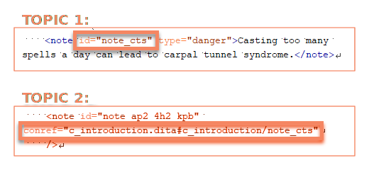
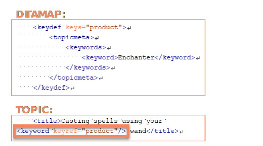

Learn about best practices of reusing content with conrefs and keyrefs to avoid
problems with localization.
Handling conrefs
DITA lets you easily reuse content using the
conref attribute.Figure 1. Example of content referencing in DITA

Tip: To set an attribute of an element in oXygen XML Editor, select the element, press Alt +
Enter, and type the name of the attribute you want to set.
Improper use of content referencing can lead to translation errors (such as wrong
gramamtical forms or text not matching the context). To avoid such errors, follow
these rules:
Don't use conrefs for incomplete phrases. Instead, use them to reference
whole sentences or larger fragments.
Avoid excessive content reuse. This may make it harder for translators to
know the context of translated text.
Handling keyrefs
Keyrefs can be used for standard text or expressions that can change, such as product
names.Figure 2. Example of keyword referencing in DITA

When used improperly, keyrefs can lead to translation errors. You can avoid them by
following these tips:
Use keyrefs for non-declinable terms, such as product names or UI
terms.
Avoid using keyrefs for common nouns.
Treat keyrefs as proper nouns and don't precede them with articles.